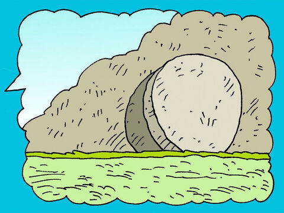
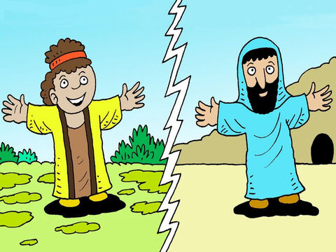

The Sign Of Jonah
Then certain of the scribes and of the Pharisees answered, saying, Master, we would see a sign from thee.
But he answered and said unto them, An evil and adulterous generation seeketh after a sign; and there shall no sign be given to it, but the sign of the prophet Jonas:
For as Jonas was three days and three nights in the whale's belly; so shall the Son of man be three days and three nights in the heart of the earth.
The men of Nineveh shall rise in judgment with this generation, and shall condemn it: because they repented at the preaching of Jonas; and, behold, a greater than Jonas is here.
The queen of the south shall rise up in the judgment with this generation, and shall condemn it: for she came from the uttermost parts of the earth to hear the wisdom of Solomon; and, behold, a greater than Solomon is here.
Matthew 12:38-42
- 

- 